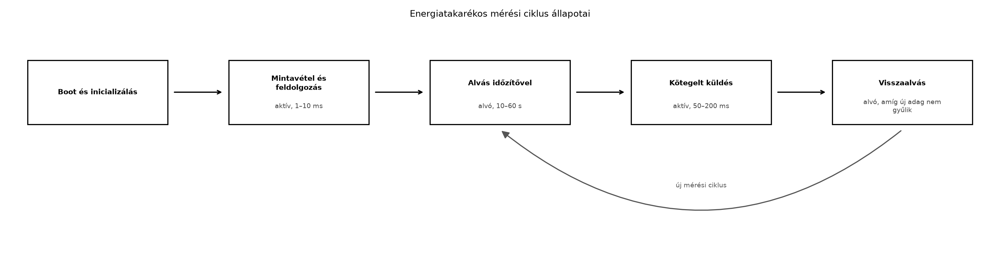

A TerraSense üvegházban az elemes ts-node csomópontnak
akár két évig is működnie kell egyetlen lítium-tionil-klorid (Li-SOCl₂)
elemről. Az Energiamodell és az elemélettartam
kiszámítása alfejezetben felírt átlagáram-egyenlet jól mutatja, hogy
az élettartamot az aktív és alvó üzemmódok aránya határozza meg. Ha a
mérőszál 100 ms-onként felébred, és a rádió minden egyes mintát külön
küld, az átlagáram több mA is lehet; ha viszont a CPU az idő 99,9%-ában
mély alvásban van, a rádió pedig csak ritkán, kötegelve ad, az átlagáram
µA nagyságrendűre csökken. Ebben az alfejezetben a Zephyr
energiagazdálkodási eszközeit és az energiatakarékos szoftvermintákat
alkalmazzuk a ts-node mérési ciklusára.
Definíció. Alvómód (sleep mode): a mikrovezérlő olyan üzemállapota, amelyben a CPU mag órajele leáll vagy lelassul, a perifériák egy része kikapcsol, és a fogyasztás a normál aktív áram töredékére csökken. Mélyebb alvómód nagyobb energiát takarít meg, de hosszabb ébredési időt és kevesebb ébresztési forrást támogat.
Az MCU-k jellemzően több alvómódot kínálnak, amelyek a kikapcsolt
órajelű részekben és az ébredési latenciában térnek el. A Zephyr a
CONFIG_PM engedélyezése után ezeket a gyártóspecifikus
módokat egy közös, eszközfüggetlen PM-API mögé rejti, így az alkalmazás
k_sleep hívása közben a kernel automatikusan a lehető
legmélyebb, még érvényes állapotba lép. A native_sim
szimulátor nem modellezi a valós fogyasztást, ezért a laborban szimulált
energiaszámlálót használunk.
Az energiatakarékos szoftvertervezés legfontosabb szabálya: a CPU-nak
eseményvezérelten kell működnie, és minden várakozást blokkoló hívással
(k_sleep, k_msgq_get, k_sem_take)
kell megvalósítani. A busy wait (k_busy_wait,
for ciklusos várakozás) aktívan tartja a magot, és a teljes
aktív áramot fogyasztja.
Az alábbi folyamatábra a mérési ciklus energiaállapotait mutatja:

Az ébresztési források a következők lehetnek:
A Zephyr tickless kernel üzemmódjában a kernel nem
ébred fel periodikus rendszer-tickre, csak akkor, amikor tényleges
esemény (időzítő lejárata, megszakítás) történik. Ez csökkenti a
felesleges ébredések számát, és hosszabb alvási periódusokat tesz
lehetővé. A CONFIG_TICKLESS_KERNEL=y beállítás a legtöbb
Zephyr-támogatású MCU-n elérhető, de a pontos viselkedés
architektúrafüggő, ezért ellenőrizni kell a használt verzió
dokumentációjában.
A rádióidő minimalizálása legalább olyan fontos, mint a CPU alvása.
Egy BLE- vagy LoRa-adás jellemzően 10–100 mA-t fogyaszt, ami
nagyságrendekkel több, mint a mély alvó mód. Ezért a
ts-node nem minden minta után küld, hanem kötegelt
küldést alkalmaz: 5 mérést összegyűjt, és egyetlen adásban
továbbítja. Ez a stratégia csökkenti a rádió bekapcsolási idejét, a
protokoll overheadet és a nyugták számát is. Hasonló elvet használ majd
az Adatformátumok: JSON, CBOR, Protocol Buffers,
SenML alfejezet, amikor a tömbös telemetria-sémát véglegesíti,
valamint a Store-and-forward: offline működés és
visszatöltés alfejezet, ahol a gateway is kötegelve tölti vissza az
offline adatokat.
A perifériák kikapcsolása szintén kritikus. A Zephyr
eszközmodelljében minden bekapcsolt periféria (szenzor, UART, SPI, GPIO)
fogyaszt. A sensor_sample_fetch() után a szenzort
sensor_attr_set() hívással alacsony fogyasztású állapotba
lehet kapcsolni, a nem használt GPIO-kat pedig bemeneti, lebegő vagy
analóg módba kell konfigurálni, hogy ne folyjon át rajtuk áram.
Az alvómód kiválasztásánál a következő kompromisszumokat kell mérlegelni:
| Szempont | Idle / tickless | Sleep | Deep sleep / Standby |
|---|---|---|---|
| Ébredési idő | azonnali | µs nagyságrend | ms nagyságrend |
| Fogyasztás | 100 µA–1 mA | 10–100 µA | 0,1–10 µA |
| Megőrzött állapot | minden | CPU regiszterek, RAM | korlátozott vagy nincs |
| Ébresztési források | minden | időzítő, GPIO, RTC | RTC, külső megszakítás |
| Zephyr-ben | k_sleep + tickless |
CONFIG_PM + sleep API |
CONFIG_PM + deep sleep |
A ts-node esetében a mérési ciklus 10 másodperces
periódusával a deep sleep a megfelelő választás, mert
az ébredési latencia (néhány ms) elhanyagolható a periódushoz képest, a
fogyasztáscsökkenés viszont jelentős. Ha a csomópontnak valós időben
kell reagálnia egy szelepvezérlő parancsra, akkor a rádió ébresztését is
engedélyezni kell, ami a BLE esetén a kapcsolat fenntartását vagy
hirdetési intervallumot jelent – ez növeli az alapfogyasztást, ezért
ilyenkor az alvó mód sekélyebb lesz.
ts-node ciklusának átalakítása szimulált
energiaszámlálóvalMunkakönyvtár:
mkdir -p ~/iot-labor/i017 && cd ~/iot-labor/i017A labor a Szálak és ütemezés alfejezetben
létrehozott ts-node projektet alakítja át. Másoljuk át a
korábbi forrást:
cp -r ../i010/ts-node ./ts-node
cd ts-nodeA src/main.c fájlt cseréljük le az alábbi tartalomra. A
kód két szálat használ: a measure_thread 10 másodpercenként
mintát vesz, a send_thread 5 minta összegyűjtése után egy
kötegelt küldést szimulál. A szimulált energiaszámláló az aktív és alvó
időt gyűjti, majd a program 60 másodperc után kiírja a becsült
átlagáramot.
#include <zephyr/kernel.h>
#include <zephyr/random/random.h>
#include <stdio.h>
#define MEASURE_INTERVAL_MS 10000U
#define BATCH_SIZE 5U
#define ACTIVE_CURRENT_MA 10.0f
#define SLEEP_CURRENT_UA 10.0f
#define MEASURE_ACTIVE_MS 2U
#define SEND_ACTIVE_MS 120U
static uint32_t active_ticks;
static uint32_t sleep_ticks;
struct telemetry_data {
uint32_t seq;
float temperature_c;
float humidity_rh;
};
static struct telemetry_data g_batch[BATCH_SIZE];
static uint8_t g_batch_count;
static struct k_mutex g_batch_mutex;
static struct k_sem g_batch_sem;
static void add_active_time(uint32_t start_ms)
{
uint32_t now = k_uptime_get_32();
active_ticks += now - start_ms;
}
static void add_sleep_time(uint32_t duration_ms)
{
sleep_ticks += duration_ms;
}
static void simulate_measurement(struct telemetry_data *out, uint32_t seq)
{
uint32_t start = k_uptime_get_32();
/* Szimulált szenzorolvasás: 2 ms aktív idő */
k_busy_wait(MEASURE_ACTIVE_MS * 1000U);
out->seq = seq;
out->temperature_c = 20.0f + (sys_rand32_get() % 1000) / 100.0f;
out->humidity_rh = 50.0f + (sys_rand32_get() % 2000) / 100.0f;
add_active_time(start);
}
static void simulate_send_batch(const struct telemetry_data *batch, uint8_t count)
{
uint32_t start = k_uptime_get_32();
/* Szimulált rádióadás: 120 ms aktív idő */
k_busy_wait(SEND_ACTIVE_MS * 1000U);
printf("[send] %u minta elküldve, seq=%u..%u\n",
count, batch[0].seq, batch[count-1].seq);
add_active_time(start);
}
void measure_thread(void *p1, void *p2, void *p3)
{
uint32_t seq = 0;
while (1) {
struct telemetry_data sample;
simulate_measurement(&sample, ++seq);
k_mutex_lock(&g_batch_mutex, K_FOREVER);
g_batch[g_batch_count++] = sample;
if (g_batch_count >= BATCH_SIZE) {
k_sem_give(&g_batch_sem);
}
k_mutex_unlock(&g_batch_mutex);
/* Alvás a következő mérésig */
uint32_t start_sleep = k_uptime_get_32();
k_sleep(K_MSEC(MEASURE_INTERVAL_MS));
add_sleep_time(k_uptime_get_32() - start_sleep);
}
}
void send_thread(void *p1, void *p2, void *p3)
{
while (1) {
k_sem_take(&g_batch_sem, K_FOREVER);
k_mutex_lock(&g_batch_mutex, K_FOREVER);
simulate_send_batch(g_batch, BATCH_SIZE);
g_batch_count = 0;
k_mutex_unlock(&g_batch_mutex);
}
}
void main(void)
{
k_mutex_init(&g_batch_mutex);
k_sem_init(&g_batch_sem, 0, 1);
k_thread_create(&measure_thread, NULL, 2048,
measure_thread, NULL, NULL, NULL,
K_PRIO_PREEMPT(5), 0, K_NO_WAIT);
k_thread_create(&send_thread, NULL, 2048,
send_thread, NULL, NULL, NULL,
K_PRIO_PREEMPT(4), 0, K_NO_WAIT);
k_sleep(K_SECONDS(60));
uint32_t total_ms = active_ticks + sleep_ticks;
float avg_current_ma = (active_ticks * ACTIVE_CURRENT_MA +
sleep_ticks * (SLEEP_CURRENT_UA / 1000.0f)) / total_ms;
printf("\n--- Szimulált energiaszámláló ---\n");
printf("Aktív idő: %u ms\n", active_ticks);
printf("Alvó idő: %u ms\n", sleep_ticks);
printf("Duty cycle: %.2f %%\n", 100.0f * active_ticks / total_ms);
printf("Átlagáram: %.3f mA\n", avg_current_ma);
printf("Becsült élettartam 2400 mAh-s elemmel: %.1f nap\n",
2400.0f / avg_current_ma / 24.0f);
}A prj.conf tartalmát egészítsük ki a tickless kernel
engedélyezésével:
CONFIG_TICKLESS_KERNEL=y
CONFIG_PM=y
CONFIG_ENTROPY_GENERATOR=yA Zephyr native_sim boardon a CONFIG_PM és
a CONFIG_TICKLESS_KERNEL pontos hatása verziófüggő; a fenti
beállítások ellenőrzési igénnyel szerepelnek, de a szimulált
energiaszámláló ettől függetlenül működik.
Fordítás és futtatás:
west build -b native_sim
./build/zephyr/zephyr.exeVárt kimenet (az értékek a szimulátor időzítésétől függenek):
[send] 5 minta elküldve, seq=1..5
[send] 5 minta elküldve, seq=6..10
...
--- Szimulált energiaszámláló ---
Aktív idő: 744 ms
Alvó idő: 59256 ms
Duty cycle: 1.24 %
Átlagáram: 0.136 mA
Becsült élettartam 2400 mAh-s elemmel: 735.3 napLátható, hogy a kötegelt küldés és a ritka mintavétel az átlagáramot a mA-es tartományból a tized mA alá viszi. Ha a szenzort minden másodpercben olvasnánk, a duty cycle több mint tízszeresére nőne.
Takarítás:
cd ~/iot-labor
rm -rf i017A labor működésének ellenőrzése:
west build hiba nélkül lefut, és a
zephyr.exe elindul.send sorok 50 másodpercenként jelennek
meg (5 minta × 10 s).k_sem_give és k_sem_take párosítás
helyes, a számláló nem veszít mintát.| Hibatünet | Ok | Javítás |
|---|---|---|
| A program azonnal kilép, nincs kimenet | A main nem vár eleget |
Növeljük a k_sleep(K_SECONDS(60)) értékét |
A send sorok sűrűbben jelennek meg |
A MEASURE_INTERVAL_MS túl kicsi |
Állítsuk 10000-re |
| Az átlagáram nagyobb a vártnál | A SLEEP_CURRENT_UA beépítése hibás |
Ellenőrizzük az átváltást:
SLEEP_CURRENT_UA / 1000.0f |
| A szálak nem indulnak el | A k_thread_create veremmérete kicsi |
Növeljük a veremméretet 4096 bájtra |
k_busy_wait() a processzort aktívan dolgoztatja, ezért a
teljes aktív áramot fogyasztja. Csak nagyon rövid, hardver-időzítésű
késleltetésekhez használjuk; minden más esetben
k_sleep().ts-node minden mérés után azonnal PUBLISH-t küld, a rádió
fogyasztása dominál, és az elem hetek alatt lemerül. A kötegelt küldés
5–10 mintát gyűjt, és egy adásban továbbítja, így a rádióidő töredékére
csökken.ts-node mérési
ciklusa 10 s alvásból és 2 ms aktív időből áll. A rádió 120 ms-ig aktív,
de csak minden 8. minta után kapcsol be. Számítsd ki az átlagáramot, ha
az aktív áram 8 mA, az alvó áram 5 µA, és a rádió aktív árama 120 mA.
Mennyi a becsült élettartam 2400 mAh-s elemmel?main.c-jét úgy, hogy a send_thread ne csak
akkor küldjön, ha 5 minta összegyűlt, hanem legkésőbb 30 másodperc után
is, még akkor is, ha csak 3 minta van. Ezzel elkerüljük, hogy ritka
mintavétel esetén az adat sokáig az eszközön maradjon.k_sem_take(&g_batch_sem, K_FOREVER) blokkoló hívás a
send_thread-ben. Mi történik, ha a
measure_thread leáll (például egy szenzorhiba miatt)?
Hogyan lehetne ezt watchdoggal vagy időkorláttal kezelni?A tick-alapú kernel periodikusan (pl. 10 ms-onként) megszakítja a
processzort, még akkor is, ha nincs tennivaló. Ez meggátolja a hosszú,
egybefüggő alvást. A tickless kernel csak a következő időzítő lejártakor
ébreszti fel a CPU-t, így a 10 másodperces mérési periódus alatt
egyetlen ébredés történik. A kompromisszum: az időmérés pontossága
csökken, és a tick-alapú szolgáltatások (pl.
k_uptime_get()) felbontása korlátozott lehet.
A ciklus hossza 8 minta esetén: 8 × (10 000 ms + 2 ms) + 120 ms = 80 136 ms. Az aktív idő 8 × 2 ms + 120 ms = 136 ms, az alvó idő 80 000 ms. Az átlagáram:
Helyesen: az aktív időkre vonatkozó energia: 136 ms × 8 mA + 80 000 ms × 5 µA + 120 ms × 120 mA = 136 × 8 + 80 000 × 0,005 + 120 × 120 = 1088 + 400 + 14 400 = 15 888 mA·ms. Az összidő: 80 136 ms. Az átlagáram: 15 888 / 80 136 ≈ 0,198 mA. Élettartam: 2400 mAh / 0,198 mA = 12 121 óra ≈ 505 nap.
A send_thread módosítása: használjunk
k_sem_take helyett k_poll-t vagy egy időzítőt,
amely 30 másodperc után is jelez. Egyszerűbb megoldás: a
send_thread ciklusában
k_sem_take(&g_batch_sem, K_SECONDS(30)), majd ha a
visszatérési érték -EAGAIN, akkor a jelenlegi
g_batch_count értékkel is küldünk, ha az nagyobb
nullánál.
Ha a measure_thread leáll, a
g_batch_sem soha nem kap jelet, így a
send_thread örökre blokkol. A megoldás: a
k_sem_take időkorláttal történő hívása
(K_MSEC(30000)), és a visszatérési érték vizsgálata. Ha
időtúllépés történt, akkor is küldjük el a rendelkezésre álló mintákat,
és esetleg növeljünk egy hibaszámlálót. A watchdog pedig újraindíthatja
a teljes rendszert, ha a mérőszál hosszabb ideig nem ad
életjelet.
Az elemes IoT-csomópont élettartamát az alvó és aktív idő aránya
határozza meg. A CPU-t eseményvezérelten, blokkoló hívásokkal kell
várakoztatni, és a lehető legmélyebb alvómódba kell küldeni. A Zephyr
CONFIG_PM és tickless kernel beállításai csökkentik a
felesleges ébredéseket, de a pontos hatás verziófüggő. A rádióidő
minimalizálása érdekében a ts-node kötegelt
küldést alkalmaz: 5 mérést gyűjt, és egyetlen adásban
továbbítja. Ezt a stratégiát a labor
~/iot-labor/i017/ts-node/src/main.c fájlja valósítja meg a
g_batch tömbbel, a g_batch_count számlálóval
és a g_batch_sem szemaforral. A szimulált energiaszámláló
kiírja az aktív/alvó időt, a duty cycle-t és a becsült élettartamot.
Továbbvitt eredmény. A kötegelt küldés és az 5 mintás
adagolás konvencióját használja az Adatformátumok:
JSON, CBOR, Protocol Buffers, SenML alfejezet a tömbös
telemetria-séma kialakításához, valamint a Store-and-forward: offline működés és visszatöltés
alfejezet, amikor a gateway is kötegelve tölti vissza az offline
adatokat.
CONFIG_TICKLESS_KERNEL, CONFIG_PM pontos
neve és hatása a használt Zephyr verzióban ellenőrizendő. A
native_sim board PM-támogatása korlátozott lehet.k_uptime_get_32() és a k_sleep
viselkedése tickless módban a Zephyr verziójától függően változhat.